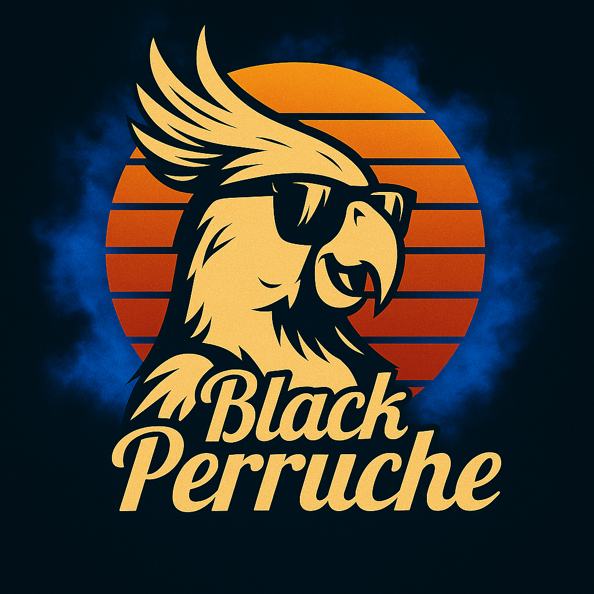

“Un style virevoltant qui vous met les plumes”
“Maître Perruche sur un arbre avec 2 mecs perchés,
chantait dans son bec un air à la tangente
de la musique noire américaine et de la pop culture.”


Viens nous voir jouer le...
28 Juin · 19h · à La Friche en Herbe · 15 Rue Emile Zola, 39400 Hauts-de-Bienne
Choisis toi-même ton concert selon le mood recherché :
- La Black Perruche : un style virevoltant qui te met les plumes, pour un moment original et authentique (pop rock, folk, blues, soul, funk et R’n’B)
- 🔥 La Groove 1 Max : la vibe afro-américaine réveille le danseur fou qui est en toi (blues, soul, funk et R’N’B)
- 🌙 La Chill Revival : laisse-toi bercer par les sons pop-rock qui ont façonné notre époque, un voyage zen et mélodique (pop rock)
- ⚡ L’Énergique : refais le plein d’ondes positives et recharge les batteries de façon optimale (funk, blues rock et pop rock)
Alors t’es plutôt de quelle humeur ?
Mail : perrucheblack@gmail.com
Téléphone : 06 14 85 50 61